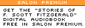

| Find out more | Log in | ||||||||||
|  | ||||||||||
|
How Big Blue fell for Linux | 1, 2, 3, 4 But there was still no companywide strategy. In various corners of the IBM empire, individual researchers like Shields or strategists like Barry (who met and became friends through an open-source mailing list started by Barry for IBM employees) were doing their own thing, but as a company, IBM was hardly united. Shields does recall one key meeting of the IBM Academy of Technology, a grouping of 300 of IBM's most distinguished scientists in October 1998, at which both he and Barry spoke, as crucial. The Academy declared Linux to be an "earthquake" (as it had earlier declared Unix and the Internet) and petitioned Lou Gerstner to review their findings.
But even though Gerstner formed a task force to study Linux, the struggle over policy at lower levels still raged without cohesion. Barry recalls how plans to write a version of WebSphere 3.0 for Linux were spiked by an IBM executive who gave a speech at IBM's research lab in Raleigh, North Carolina, declaring that Linux was "going nowhere." That executive, he notes now, without hiding his satisfaction, is currently in charge of an IBM division devoted to Linux. The task force recommendations, says Barry, were watered down and "milquetoasted." IBM seemed lost at sea. Then came the morning of Dec. 14, 1998. That day, John Markoff, the lead technology reporter for the New York Times, wrote a short piece entitled "Sharing Software, IBM to Release Mail Program Blueprint." In it, Markoff detailed how IBM was planning to release a mail program called Secure Mailer, developed by a programmer named Wietse Venema, as open source. What the article didn't say was that the program had been something that Venema had created before joining IBM, that it had always been open source, and that IBM was only now acknowledging that Venema could keep working on it as an open-source project. But that didn't matter. All that counted was that IBM CEO Lou Gerstner read the article, and, according to legend, immediately became apoplectic. As far as he knew, IBM already had a mail program -- it was part of the Lotus Notes package. And if IBM was endorsing open-source software as a worthwhile strategy, then Gerstner wanted to know about it. James Barry says that Gerstner didn't care one way or another about open source as a software methodology. Barry says that Gerstner frequently liked to note, "I am not a technologist." What he cared about was strategy. Did IBM have an open-source strategy? And if so, what was it? Gerstner started making phone calls. First he called his chief of software, who called his subordinate, who in turn called his. The conference call kept expanding, until it made its way down to the research director who managed Venema. By the end of day, Gerstner had his answer. There was no clear strategy. Or at least there hadn't been up to that point. "There was that one morning in December of 1998, and by that afternoon the open-source strategy had jumped into the runway," says Dan Frye, IBM's program director for open source and Linux. "We talked to everyone in the industry. The answer we came back with was that open source was good for us." As a result, Linux got the green light. The skunks could come out of the woodwork. Of course, it still wasn't easy. "Internally, the battles were amazing, and you could understand why," says Jeff Nick, chief architect for the System 390. "A lot of the [IBM] technical community was very incredulous about this. You grow up in an OS/390 [the operating system designed for the 390] community, and there is great passion and pride in the heritage of OS/390 and the integration of its capabilities into the hardware platform. To suggest that there is a value proposition for running an open-source, not controlled, Unix platform on our hardware, and to propose that Unix applications might be better suited for running on Linux on the 390, than on OS/390. I was almost seen in my own technical community, particularly in the system 390 design council, as antichrist. There were multiple painful meetings with my technical peers across IBM on the OS/390 platform. They were saying, you must be out of your mind, why would you want to do this, we need to protect the OS/390 environment." "It was a huge risk," says Nick. "And the reason we were ultimately successful was that we could show that by supporting middle-tier Unix applications that are collaborative in a distributed environment with the 390 back end and by running that entire heterogeneous workload on our platform, we would actually in the end be providing a bigger platform for our customers than we would if we forced everything to be on OS/390. There's a huge risk in that statement, but we are banking on the power of open source." Huh? Just what exactly is Nick trying to communicate here, in that mix of techno-jargon? In essence, pretty much the same thing that James Barry and Yen-ping Shan were saying when they pushed Apache. There is a whole world of people using Linux-based operating systems and the vast ecology of programs that run on those operating systems right now. An enormous amount of work is being done using a set of tools that have a Unix heritage and are currently at home on Linux-based systems. The Linux generation is in some ways the heart and soul of the Net, and its numbers, according to Nick, are surging. An entire generation of programmers has adopted Linux. It doesn't matter whether they are doing this because they hate Microsoft, or think Linux-based systems are technically superior, or just like to hack on free software. The fact is, it's happening. Market share for Linux-based operating systems -- and mind share for Linux among developers -- is continuing to rise. By ensuring that Linux will run on the 390, IBM would ensure that its mainframes would be an attractive environment for all those programmers and system administrators to work in. A bank could use its mainframe to handle its massive data-processing needs, and at the same time allow its Linux-skilled programmers to do whatever they needed to do -- in particular, to make use of all the middle-tier software applications that have been developed to get things done in an open, Internet environment. By expanding the possibilities, IBM would be able to expand its own market penetration. The break with tradition represented by IBM's decision to open up the mainframe to non-IBM software is hard to overstate. For decades, IBM banked on selling customers the entire "vertical" package. From the hardware to the software to the support, it was all Big Blue, all the way. But now, by acknowledging that it made strategic sense to -- paraphrasing Chairman Mao -- let a hundred software programs bloom on the mainframe, IBM was signaling that it knew it could no longer call the shots in the mainframe marketplace. Again, it just doesn't matter, from this perspective, whether Linux-based operating systems might actually be technically inferior to their Windows NT or Sun Solaris competitors in certain aspects. I asked Nick why, if it made so much sense to try and take advantage of all those people with Linux skills, wouldn't it also be prudent to attempt the same with NT, and gain access to that huge world as well? "It would be great if you could do that," says Nick. "But the difference is that because Linux is open source, which allows it to be worked on by a large collaborative set of developers, it has also been built to be platform agnostic. It's got what we call horizontal layering of function, so you can easily port the OS to multiple machine architectures and platforms. This is not true of NT and this is not true of most Unixes -- where each operating system has grown up tied to its machine architecture. " In other words, Linux, even if it may have started out as a hack to run Unix on a cheap Intel processor, has since evolved into the ultimate protean operating system. Over the years, its functions have been streamlined and compartmentalized to the point where it has become relatively easy to adapt it to different systems. As such, Linux-based operating systems (as well as BSD operating systems, although they represent a much smaller percentage of the current OS marketplace) are the true heirs of what one programmer once immortalized as the "worse is better" paradigm. In the 1980s, a programmer named Dick Gabriel wrote a paper about the programming language C++ and the operating system Unix called "Worse is Better." His argument was that simple systems that get most of the job done are better at surviving, over the long run, than complex systems designed to do everything perfectly. Complex systems are hard to adapt to new situations, and can break down easily. Simple systems can be fixed quickly, and mutate even faster. Today, Gabriel is the main open-source evangelist at Sun Microsystems, and C++ and Unix are the building blocks out of which the Internet has been constructed. Linux is just the newest all-purpose building material. There's a "virtuous cycle" here that feeds voraciously on itself. As Linux is ported to an ever-increasing number of hardware platforms, an ever-increasing number of programmers gain the opportunity to work on code that benefits everyone. Which in turn makes Linux-based systems even more attractive. And that's the business case for open source. At first listen, "worse is better" sounds like Orwellian doublespeak, a phrase designed more to confuse than enlighten. But in practice, "worse is better" is an actual evolutionary success strategy -- and nothing exemplifies its principles better than open source. - - - - - - - - - - - - Read Chapter One of the Free Software Project Join the discussion on this chapter Next installment: The Sun also rises on open-source software -- how Sun Microsystems, with a little help from Collab.net, is learning from its mistakes and joining the world of open source. salon.com - - - - - - - - - - - -
|
|
|||||||||||||||||||||||||||||||||||||||||||||||||||||||||||||||||||||||||||||||||||||||||||||||||||||||
|
The Free Software Project | |||||||||||||||||||||||||||||||||||||||||||||||||||||||||||||||||||||||||||||||||||||||||||||||||||||||||